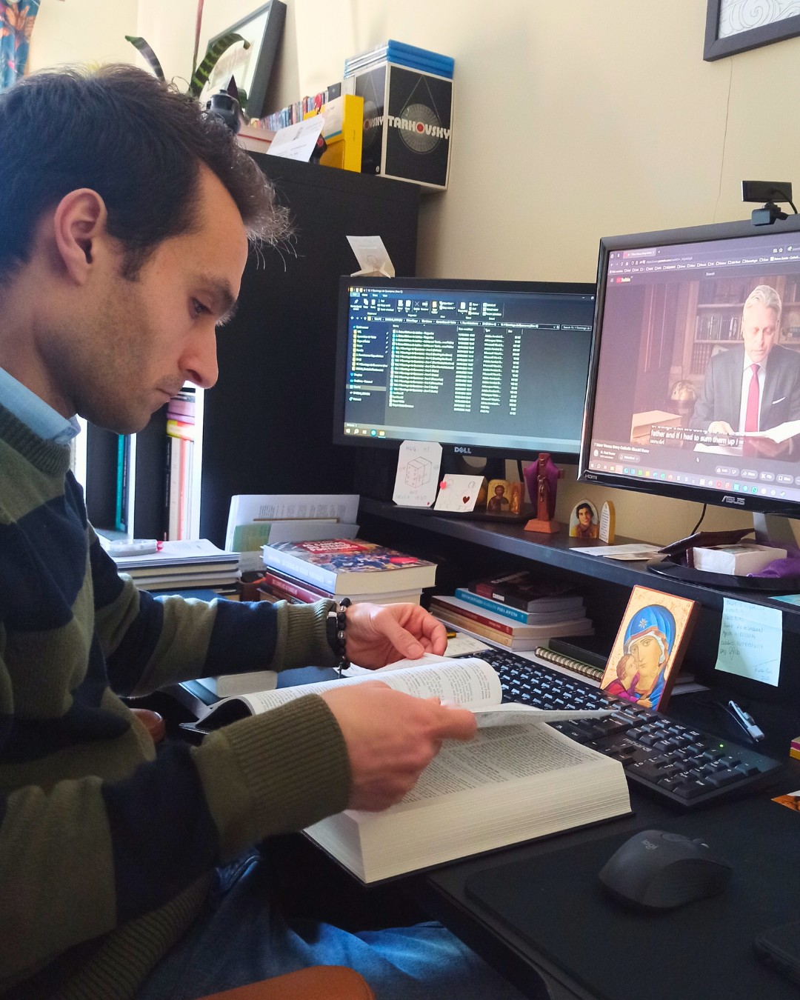
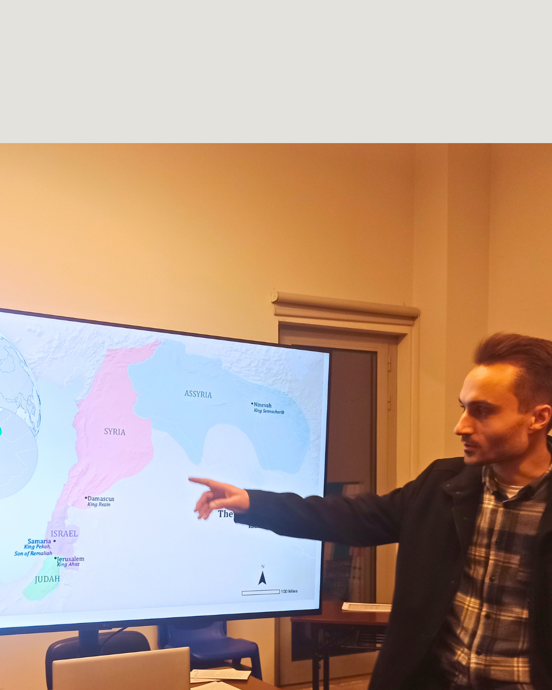

O Meu Percurso
A minha missão através do ensino e das palestras assenta no compromisso inequívoco com a Verdade revelada. Sendo teologicamente ancorado na verdade de Cristo e no Magistério, considero-me politicamente sem-abrigo. Sou crítico de muitas coisas e, por fidelidade à exigência do Evangelho, admirador de poucas.
Como Fundador da Jerónimo Editora e responsável pelo movimento paroquiano Aprendizes do Verbo, dedico o meu percurso a formar comunidades paroquiais ativas, munindo-as com boas fontes e literatura sólida para fazer face aos desafios intelectuais da contemporaneidade.
«Sem a loucura que é o homem
Mais que a besta saddia,
Cadáver adiado que procria?»
Fernando Pessoa



